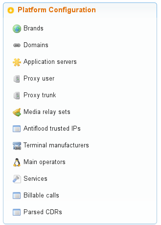
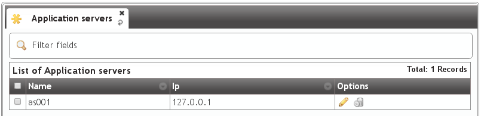
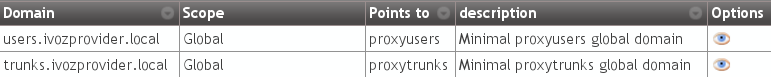

Main Management¶
Important
Any of the 2 Public IP addresses configured during the installation will work to acces the web portal. Default credentials are admin / changeme.
In this section will reference global administrator configuration options, avaible in the menu (Main management) of the web portal (only visible to God Admins):
Custom installation configuration¶
During the install process two IP addresses will be requested in order to run the following two processes:
Users SIP Proxy¶
This is the SIP proxy exposed to the external world where users register their terminals.
The value displayed in the section Proxy users will show the IP address entered during the installation process.

Providers SIP proxy¶
This is the SIP proxy exposed to the external world in charge of connecting the provider that brand aministrators will configure for peering.
The value displayed in the section Proxy trunk will show the IP address entered during the installation process.

Note
Only the IP address will be entered as the port will be always 5060 (5061 for SIP over TLS).
Danger
This 2 values can be changed from the portal, but they must always have the same IP address that proxy process listen to requests.
Standard global configuration¶
The installation process includes other global values that are the same in any standalone IvozProvider installation and can also be checked from the web interface.
Application Servers¶
The section Application Servers will list the IP address where the existing Asterisk processes will listen for request, and like previously mentioned, can scale horizontaly to adapt the platform for the required load.
Contrary to the Proxies, Asterisk is not exposed to the external world, so for a standalone installation there will only be one listening at 127.0.0.1.
Note
The listening port will not be displayed in the field because it will always be 6060 (UDP).
Important
As soon as another Application Server is added, the proxies will try to balance load using it. If no response is received from added Application server, it will be disabled automatically.
Media relay¶
Media relays are in charge of bridging RTP traffic of established calls. Like the Application Servers, they can scale horizontally as much as required.
Media relays are organized in groups so they can be assigned to a company. Each element of the group has a metric that allows non-equal load balancing within the same group (i.e. media-relay1 metric 1; media-relay2 metric 2: the second media relay will handle two times the calls than the first one).
Hint
The static assigment of media relay groups is not the common practice but allow us to assign strategic resources to companies that need a warranted service. The most common usage of this groups of media relays is to place them near the geographic area of the company (usually far from the rest of the platform systems) in order to reduce latencies in their conversations.
In a standalone installation, only one media relay group will be exist:
By default this group only has a media server:

Note
The address displayed is the control socket, not the SDP address that will be included during SIP negociation. By default this alone media-relay will share the same IP address that the User’s SIP proxy.
SIP Domains¶
The section Domains will display the SIP domains that points to our two public IP addresses.
- Users SIP Proxy IP address
- Trunks SIP Proxy IP address
After the initial installation, there will be two domains, one for each address:
This domains will be used internally by a builtin DNS server included in the solution.
Attention
As mentioned in the section Company SIP Domain, each company will require a DNS pointing to the users SIP proxy. Once configured, the domain will be displayed in this list so global administrator can check what domains are registered for each company.
Brands¶
After the initial installation, the platform will have an already created brand called DemoBrand. Let’s inspect its parameters:
- Name
- Sets the name for this brand.
- NIF
- Number used in this brand’s invoices.
- Logo
- Used as default logo in invoices and in portals (if they don’t specify another logo).
- Invoice data
- Data included in invoices created by this brand.
- Mail data
- Display name and from address used in external emails for this brand (faxes, voicemail, etc.)
- SIP domain
- Introduced in 1.4. Domain pointing to Users SIP proxy used by all the Retail Accounts of this brand.
- Recordings
- Configures a limit for the size of recordings of this brand. A notification is sent to configured address when 80% is reached and older recordings are rotated when configured size is reached.
- Features
- Introduced in 1.3, lets god operator choose the features of the created brand. An equivalent configuration is available in Companies, to choose between the ones that god operator gave to your Brand. Related sections are hidden consequently.
Hint
Some features (currently invoices and billing) are related to brand and cannot be assigned to companies. Remaining features are related to companies and lets the brand operator to assign them to its companies.
Warning
Disabling billing hides all related sections and assumes that an external element will set a price for calls (external tarification module is needed, ask for it!).
Note
Disabling invoices hides related sections, assuming you will use an external tool to generate them.
Emulate the Demo brand¶
As mentioned above, the initial installation will have an already created brand called DemoBrand, that will be used for our goal: to have 2 telephones registered that can call each other.
Before going to the next section, is quite important to understand how the emulation works.
- As global operator, you have access to the menu Main management only visible to God administators.
- Apart from that menu, you will also have access to the Brand configuration and Company configuration that will look more or less like this:

- Check following button

- When pressed, a popup will be displayed:
- After selecting the DemoBrand brand, the icon will change and shows the emulted brand:

- The upper right corner of the portal will also display the brand that is being emulted:
What emulation means¶
Basically, that everything in the menu ‘Brand configuration’ will be relative to the chosen brand and is exactly the same menu entries that the brand operator will see using its brand portal.
Tip
Ok, ok. maybe exactly is not totally accurate. The global operator is able to see some fields in some screens that other admins cann’t (i.e. On Company edit screen, fields like ‘Media relays’ or ‘Application server’ are only configurable by the global operator.